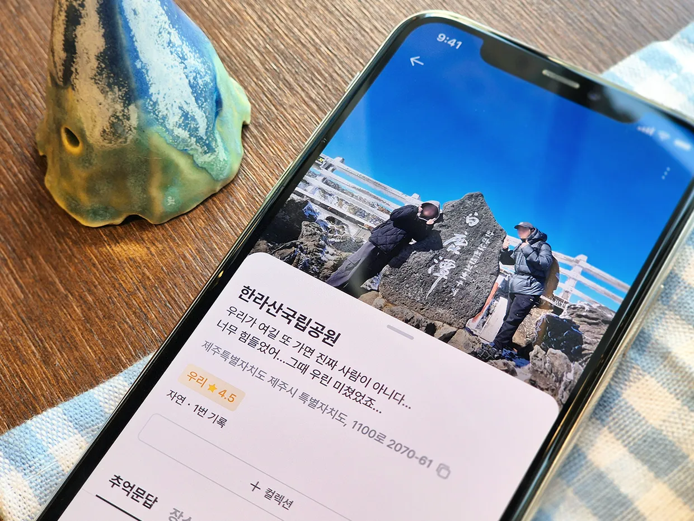
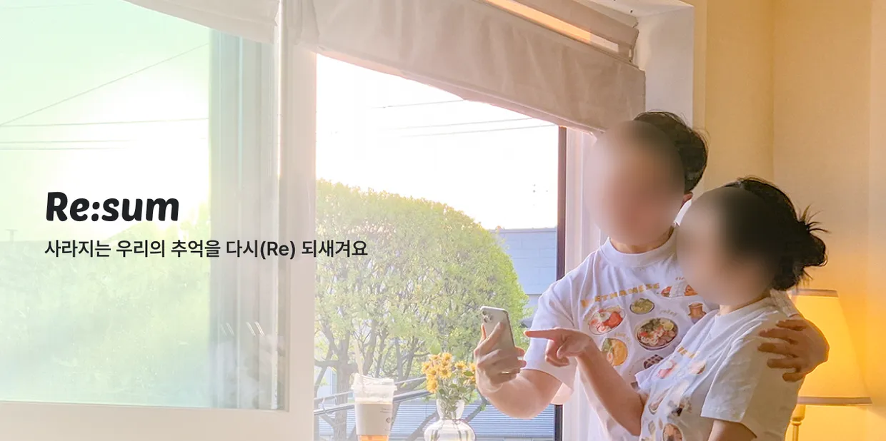
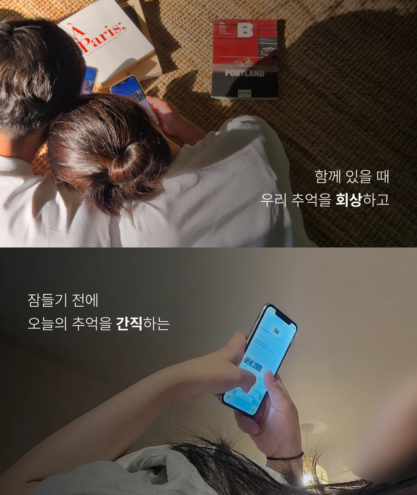
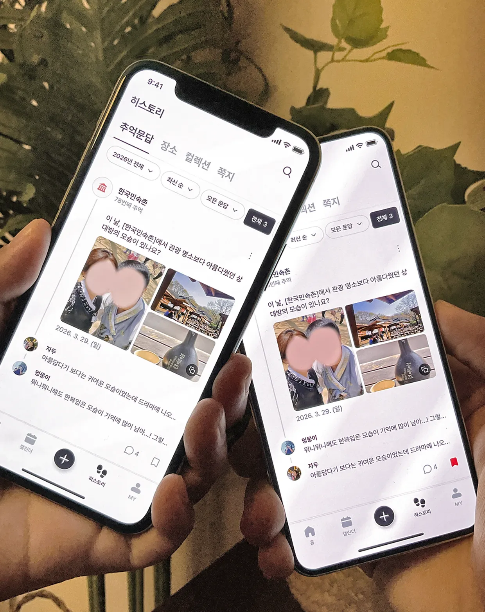
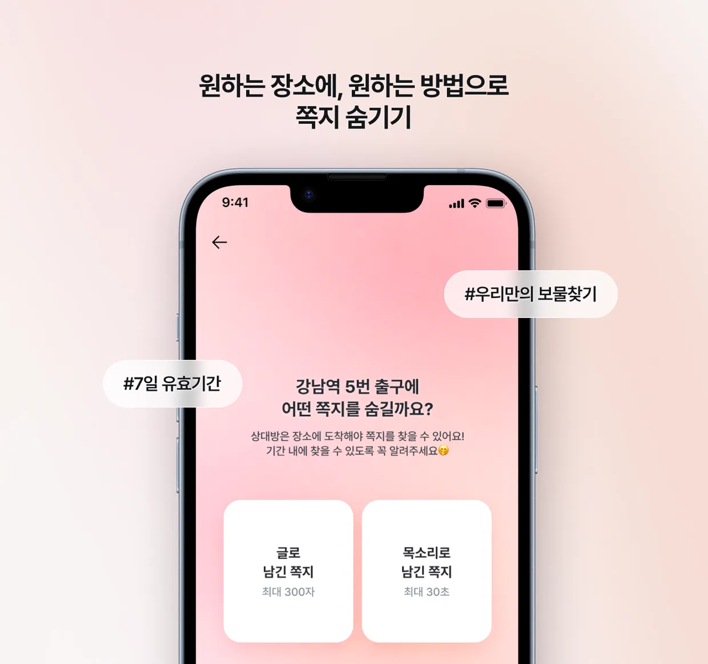
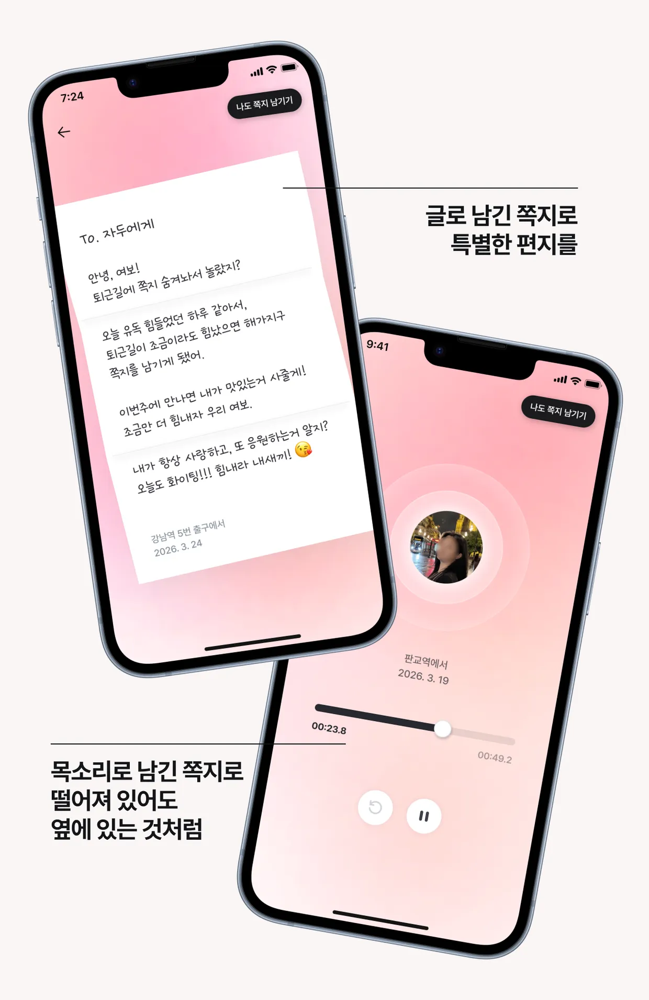
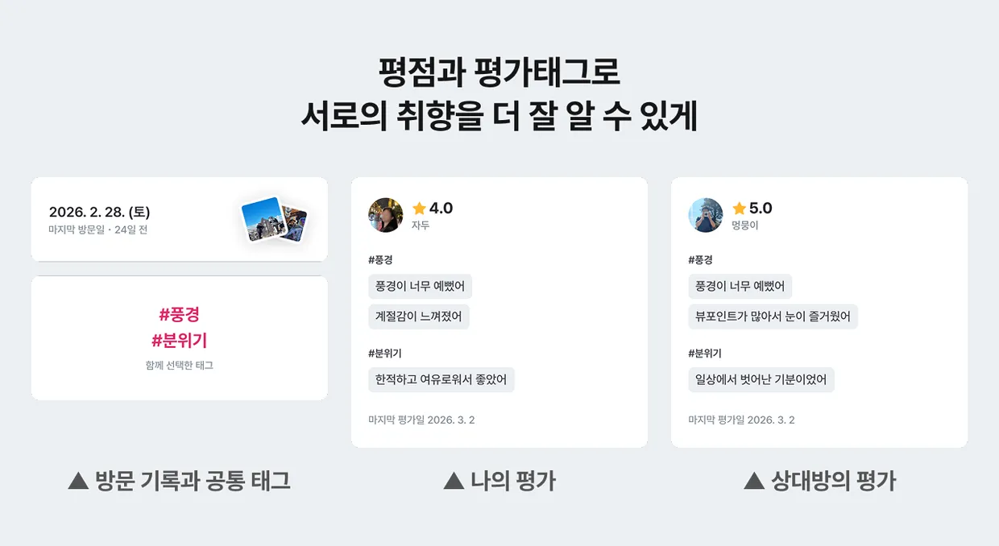
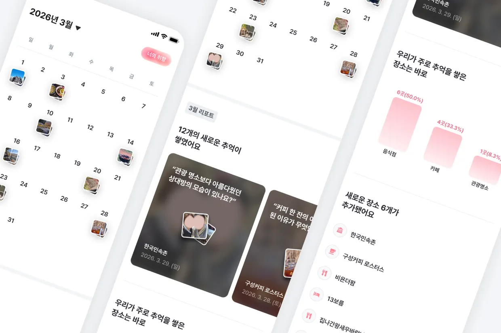
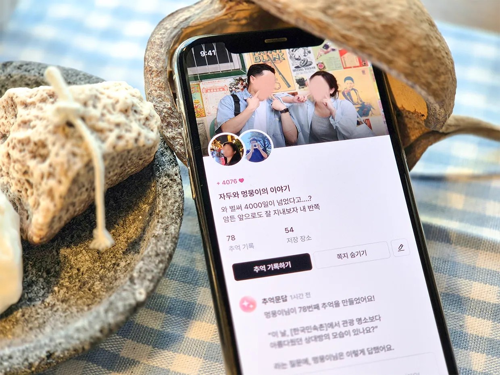
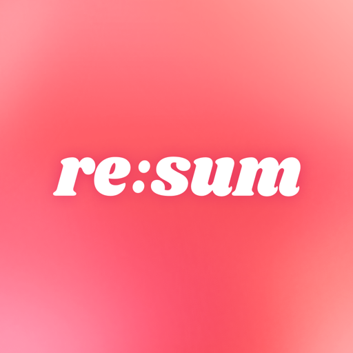

장소별로 쌓이는 이야기
같은 곳을 여러 번 가도 그날의 이야기는 매번 다릅니다. 시간 순서대로 묶어 다시 봐요.

텀블벅 409% 달성 · 후원자 46명
커플이 함께 데이트 장소를 기록하는 앱.
12년차 커플이 직접 만들었어요.
리썸을 만든 이유
서로에게 익숙해질수록 데이트는 반복되고, 추억은 조금씩 희미해집니다.
12년차 커플인 저희도 그랬어요.

그 순간들을 장소와 함께 남겨두면 그날의 분위기까지 다시 살아납니다.
Point 1
방문한 장소와 다녀온 횟수에 맞춰 리썸이 질문을 건넵니다. 답은 둘 다 쓴 뒤에 열려요. 서로 몰랐던 마음을 그제야 알게 됩니다.

Point 2
누구나 갈 수 있지만 오직 연인만 찾을 수 있는 쪽지. 글 300자 또는 목소리 30초로 장소에 숨겨두면, 유효기간 안에 그 근처에 가야 열립니다.

가끔은 빠른 메시지보다
이런 느린 쪽지가 더 특별합니다.

더 보기
옆으로 밀어서 둘러보세요

같은 곳을 여러 번 가도 그날의 이야기는 매번 다릅니다. 시간 순서대로 묶어 다시 봐요.

편의를 중요하게 여기는지, 인테리어를 중요하게 여기는지. 연인이 만족한 포인트를 봅니다.

이번 달 쌓인 추억과 자주 간 장소를 월간 리포트로 정리해드려요.


지금 리썸을 설치하고 둘만의 지도를 만들어보세요.